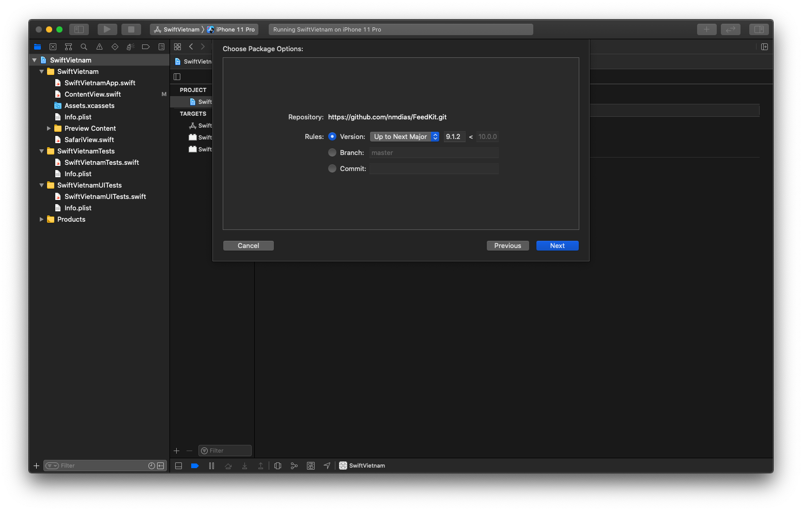
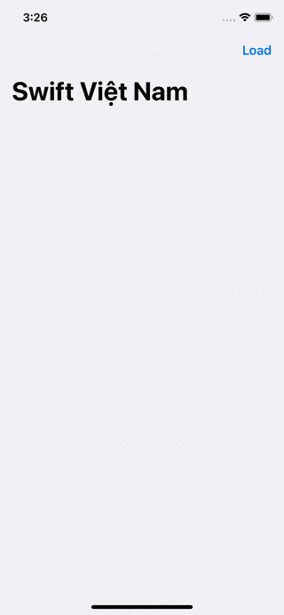

Bạn sẽ học gì?
- Quản lý thư viện bên thứ 3.
- Tìm kiếm Swift Package.
- Tích hợp Swift Package vào Xcode.
- Sử dụng FeedKit để tải RSS Feed từ Internet.
Các lựa chọn để quản lý dependencies
Sử dụng Github hoặc Swift Package Index để tìm kiếm thư viện bên thứ 3.



Heading
struct ContentView: View {
static let feedURL = URL(string: "https://swiftvietnam.com/feed.rss")!
@State var newsItems: [NewsItem] = []
@State var link: URL? = nil
var body: some View {
NavigationView {
List {
ForEach(newsItems, id: \.self) { item in
Button(action: {
self.link = item.link
}) {
NewsItemView(item: item)
}
}
}
.sheet(item: $link, content: { link in
SafariView(url: link)
})
.navigationTitle("Swift Việt Nam")
.navigationBarItems(
trailing: Button(action: {
self.loadFeed()
}) {
Text("Load")
}
)
}
}
private func loadFeed() {
let parser = FeedParser(URL: Self.feedURL)
// Parse asynchronously, not to block the UI.
parser.parseAsync(queue: DispatchQueue.global(qos: .userInitiated)) { result in
switch result {
case .success(let feed):
guard let rssFeed = feed.rssFeed else {
print("Feed ist empty")
return
}
self.parseFeed(rssFeed)
case .failure(let error):
print("Error: \(error)")
}
}
}
private func parseFeed(_ feed: RSSFeed) {
let newsItems = feed.items?.compactMap { rssFeedItem -> NewsItem? in
guard let title = rssFeedItem.title,
let link = rssFeedItem.link,
let url = URL(string: link) else {
return nil
}
return NewsItem(
title: title,
link: url
)
}
// Go back the the main thread to update the UI.
DispatchQueue.main.async {
self.newsItems = newsItems ?? []
}
}
}
Kết quả
